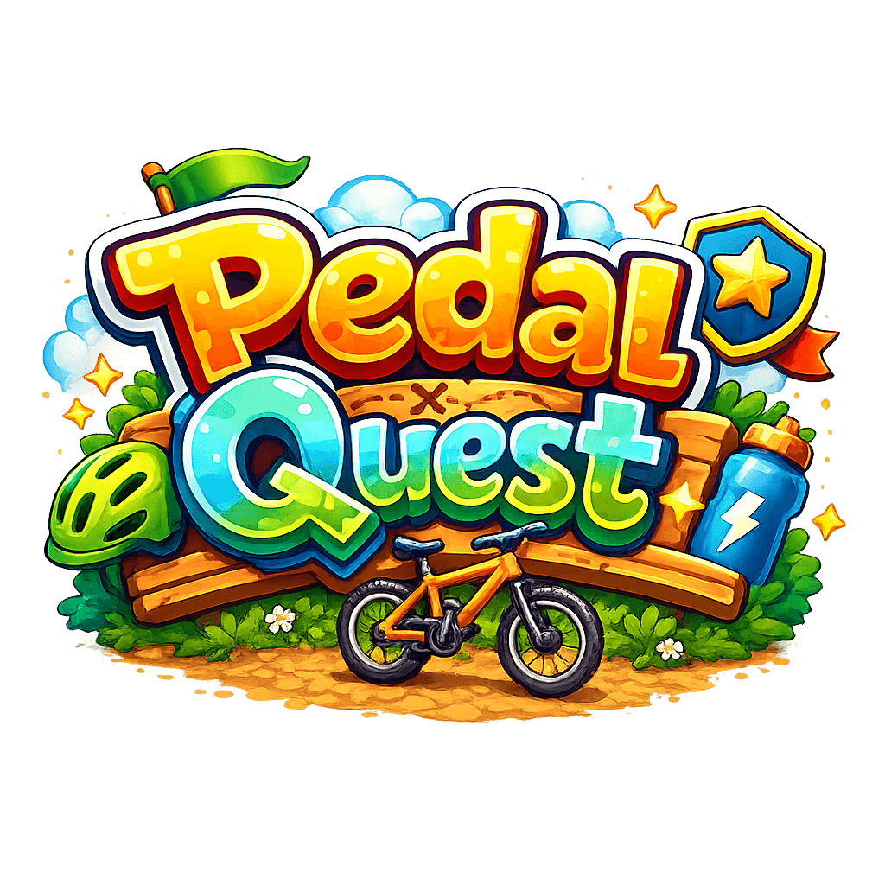

Private family cycling diary
Turn every family bike ride into a private adventure diary.
Pedal Quest was built for one young rider to log his journeys with the family he cycles with — but everyone is different, and at its heart it's a cycling diary without pressure. Routes, photos, badges and diary-style memories. No accounts, no adverts, no social feeds, no leaderboards.
- No sign-ups
- No adverts
- No social feeds
- Private by design
Made for real family rides
A warm adventure log, not a serious fitness app.
Pedal Quest is built for first rides, muddy shortcuts, sunny park loops, family cycle paths, little achievements and big smiles. It celebrates effort, confidence and curiosity rather than training scores or athletic comparisons.
I built it for my 9-year-old son, Charlie, so he could look back at where he went, who he rode with, what he saw and how the ride felt. Charlie was also the first person to test it — and the first to tell me when something didn't work. Every ride becomes part of a private family memory book — for him, and for anyone else who wants the same.
Inside Pedal Quest
What you can do on every ride
Start a ride easily
Tap to get ready, then tap to start — and watch the route appear on Apple Maps as the ride unfolds.
See the adventure
Track distance, time and top speed at a glance — no clutter, no jargon.
Capture memories
Take photos during the ride and save them with a friendly diary entry afterwards.
Earn badges
Unlock warm, encouraging badges for milestones, and invent custom badge ideas for a grown-up to award.
Check playful weather
See friendly local forecasts such as "watch out for puddles" or "bring your water bottle".
Make it their own
Choose themed backgrounds including Sky, Sunset, Forest, Underwater, Dinosaur, Space and Racing Track.
✨ Try the theme picker in the top right corner to preview every theme on this page.
The story
How Charlie helped build it.
Charlie is 9. I got him a new bike recently and thought it would be cool for him to log his journeys and see how far he was riding. So I went looking for an app to give him — but every one I tried wanted an account, or wasn't suitable for someone his age, or both. So I asked him what he'd want if I built him one instead.
His list: earn badges, track his speed, track how far he's gone, be fun, take pictures during the ride, record who he rode with, and be able to race whoever he's riding with. I thought about it and decided it was doable. Hyperspeed sounds and graphics went in for the fun part. Badges followed for speed, distance, incline and more.
Then, at bedtime — in the classic 9-year-old way of trying to put off actually going to sleep — he added one more: "stop bad words from being added". I have no idea why that was on his mind, but I thought it was a pretty cool addition. The profanity filter went in the next day, fully on-device.
After his first proper ride with an early version, he came back with the single most important piece of feedback I had: if the phone is locked, it doesn't track the speed or distance properly. I fixed that. Pedal Quest now tracks happily through a locked screen in a backpack.
He also wanted backgrounds that matched the person using the app — including being able to add his own picture as one. And he wanted to be able to add his little brother to his rides. (Hopefully soon, mate.)
Then I made a small parenting mistake. He asked for more badges and, bless him, suggested "we could add it as an in-app purchase". I told him the app would be free forever — and to explain why, I described what I'd seen in the other apps: they were like a Fortnite leaderboard, with everyone racing against everyone else, and most of them wouldn't even let him join because of his age. Telling him about a Fortnite leaderboard was a mistake. He loved the sound of it.
The happy middle was the ride-buddy feature. When two people pair their phones for a ride, each one sees the other's badges and speed live. No public leaderboard, no strangers, no internet — just the two of you on a ride together.
Then he tested it. He loved it. And that's how we ended up here.
Read the full story →For grown-ups
Privacy, safety and simple controls.
Pedal Quest is designed around families who want the memories without the noise. There are no accounts, adverts, analytics SDKs, third-party trackers, social feeds or public leaderboards.
- Ride data stays on your device and syncs privately through your own iCloud when signed in.
- An optional grown-up PIN supports Face ID or Touch ID.
- Hold-to-confirm controls help prevent accidental destructive actions.
- Photos can stay inside Pedal Quest, be saved manually, or auto-save to Photos.
- Weather can be turned off entirely in the grown-up area.
- A live Permissions hub shows exactly what the app can access.
- Pedal Quest works offline, with iCloud sync catching up when available.
- British English throughout.
Sharing a phone
Built around real family life.
Charlie now has his own iPhone — but only for when he's out adventuring. We've started letting him head off on long walks with friends and it felt right to give him a way to be reached. Plenty of families are at a different point though, and many children get a family iPad before their own phone. Pedal Quest works on both. Whether it's a family iPad in the rider's rucksack, a parent's phone in their bag, or two devices side by side as you ride together, Pedal Quest is set up to be filled in by whoever wants to remember the ride.
The point is the ride, the memory and the confidence it creates — not whose device recorded it.
Ride together
Optional ride-buddy pairing.
Families with two devices can turn on ride-buddy pairing in the grown-up area. It works over Bluetooth and Wi-Fi, is encrypted, does not use the internet, and is off by default.
When riding side by side, both riders can see each other's trail live.
Accessible by design
Native, readable and family-friendly.
Pedal Quest is built natively for iPhone and iPad, with support for Dark Mode, Dynamic Type, reduced motion preferences, clear contrast, VoiceOver-friendly labelling and British English throughout.
Available on the App Store
Pedal Quest is made for iPhone and iPad.
Designed for iOS and iPadOS 26 or later, Pedal Quest gives families a gentle, private way to turn bike rides into memories they can look back on with pride.